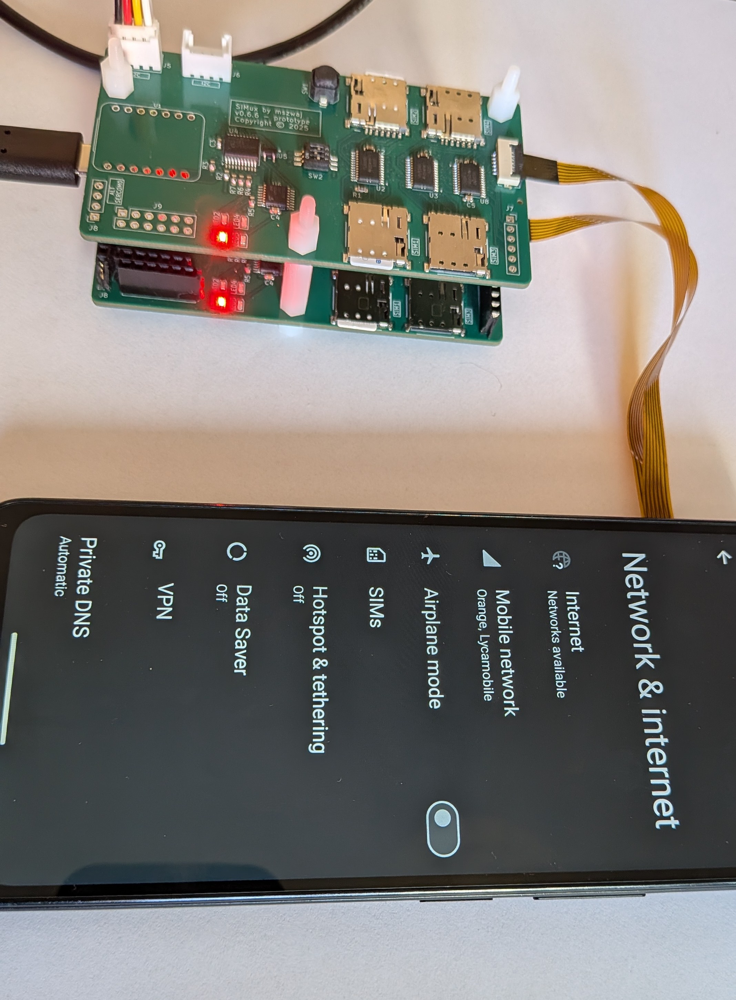
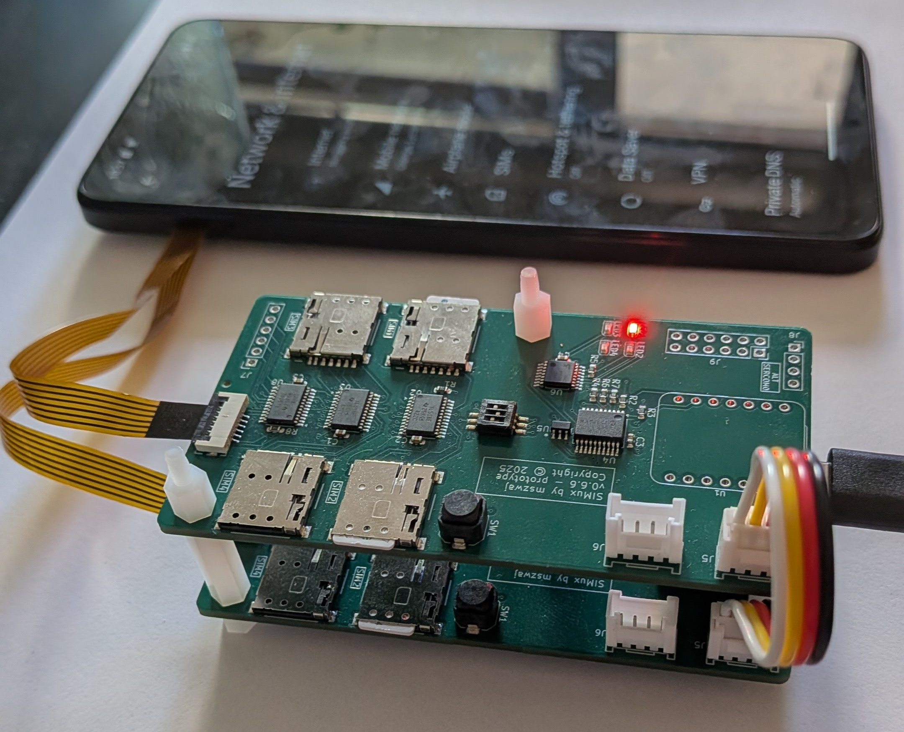
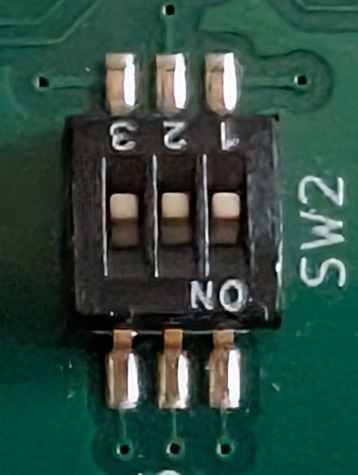

Multi-Board Configuration
Connect multiple SIMux boards for dual-SIM target devices or multiple target devices in test rig.
Overview
SIMux supports connecting up to 8 boards together:
Only one board needs an MCU (the main board)
Extension boards are identical hardware without MCU installed
Boards communicate via I2C bus using Grove connectors
Each board needs a unique I2C address (0x20 to 0x27)
Note
Design Philosophy: All SIMux boards are electrically identical. Installing an MCU on one board designates it as the “main board” that controls all others.
Use Cases
Dual-SIM Device Testing
2 SIMux boards = 8 different SIM cards
Each board controls one SIM slot in the phone
Test all carrier combinations without physical swapping
Setup Example


Description of filmed usage
Set-up
2 boards stacked-up, each one with 2 SIM cards inserted to slot 1 and 2. Nylon distances and mointing holes used for stack-up
Board on the bottom has XIAO SAMD21 mounted
SIMux controlled from MobaXterm and powered from the same USB cable
Boards connected with Grove cable for I2C communication
The bottom board is board0 and it is connected to SIM1 slot on DUT with FPC (flexible Printed Circuit)
The top board is board1 and it is connected to SIM2 slot on DUT with FPC
Both boards were set for SIM1 slot selection
What happened
Raw MobaXterm view:
SIM0=0
Board 0 SIM set to 0
SIM1=0
Board 1 SIM set to 0
SIM0=2
Board 0 SIM set to 2
SIM1=2
Board 1 SIM set to 2
SIM0=1
Board 0 SIM set to 1
SIM1=1
Board 1 SIM set to 1
Each transition is observed on the video:
SIM0=0 disabled SIM card in SIM1 slot on DUT
SIM1=0 disabled SIM card in SIM2 slot on DUT
SIM0=2 enabled SIM card from SIM2 slot on board0 to SIM1 slot on DUT
SIM1=2 enabled SIM card from SIM2 slot on board1 to SIM2 slot on DUT
SIM0=1 enabled SIM card from SIM1 slot on board0 to SIM1 slot on DUT
SIM1=2 enabled SIM card from SIM2 slot on board1 to SIM2 slot on DUT
Multi-Modem Test Rig
Up to 8 SIMux boards = 32 different SIM cards
8 different modems, each with 4 SIM options
Complete test automation setup
Hardware Requirements
For Each Extension Board:
1× SIMux PCB (without MCU installed)
1× Grove cable (4-pin I2C connection)
1-4× nanoSIM cards
1× FPC cable to target device
For Main Board:
1× SIMux PCB with MCU (Seeeduino XIAO SAMD21)
1× USB-C cable (power + communication)
1× Grove cable per extension board
1-4× nanoSIM cards
1× FPC cable to target device
Physical Connection
Grove Cable Topology
Each SIMux board has 2 identical Grove connectors (4-pin, 2.0mm pitch):
Both connectors are electrically connected (parallel on the PCB)
No distinction between “input” or “output” - use either connector
One Grove cable connects two boards
Second Grove connector is for daisy-chaining to next board
Example with 4 boards:
FPC FPC FPC FPC
┌──────────┐ ┌─────────────┐ ┌─────────────┐ ┌─────────────┐
<-USB-C->│Main Board│<-Grove->│Extension 1 │<-Grove->│Extension 2 │<-Grove->│Extension 3 │
└──────────┘ └─────────────┘ └─────────────┘ └─────────────┘
Grove (free) Grove (free)
Step-by-Step Connection
Power off all equipment
Prepare boards:
Main board: MCU installed, DIP switch set to 000 (all OFF, address 0x20)
Extension boards: No MCU needed
Set unique DIP switch address on each extension board (see I2C Addressing section below)
Connect Grove cables:
Connect any Grove connector on main board to any Grove on extension board 1
Connect other Grove on extension 1 to Grove on extension 2
Continue daisy-chaining up to 8 boards total
Connect FPC cables:
Each board’s FPC goes to different SIM slot on target device
Or to different target devices if testing multiple modems
Power up:
Connect USB-C to main board
All extension boards are powered through I2C Grove connection
Warning
Always connect boards before power-up. Hot-plugging I2C devices would need reset.
I2C Addressing
Each SIMux board has a unique I2C address set by a 3-position DIP switch on the PCB.
DIP Switch Configuration
The 3-line DIP switch controls address pins A0, A1, A2 of the MCP23008 I2C expander:
Position 1: A0 (LSB - Least Significant Bit)
Position 2: A1
Position 3: A2 (MSB - Most Significant Bit)
Switch positions:
ON = 1 (high)
OFF = 0 (low)
Address Range
Board Number |
A2 |
A1 |
A0 |
DIP Switch |
I2C Address (Hex) |
|---|---|---|---|---|---|
Board 0 |
0 |
0 |
0 |
OFF-OFF-OFF |
0x20 |
Board 1 |
0 |
0 |
1 |
OFF-OFF-ON |
0x21 |
Board 2 |
0 |
1 |
0 |
OFF-ON-OFF |
0x22 |
Board 3 |
0 |
1 |
1 |
OFF-ON-ON |
0x23 |
Board 4 |
1 |
0 |
0 |
ON-OFF-OFF |
0x24 |
Board 5 |
1 |
0 |
1 |
ON-OFF-ON |
0x25 |
Board 6 |
1 |
1 |
0 |
ON-ON-OFF |
0x26 |
Board 7 |
1 |
1 |
1 |
ON-ON-ON |
0x27 |

Important
Each board must have a unique DIP switch setting. Address conflicts (two boards with same address) will cause communication failures.
Note
Boards are numbered by addresses from the lowest to the largest. If there are 4 boards connected: 0x21, 0x23, 0x27, 0x25 it would be numbered like below: Board 0 - 0x21 Board 1 - 0x23 Board 2 - 0x25 Board 3 - 0x27
Automatic Detection
At boot, the firmware scans I2C bus (0x20-0x27) and detects all connected boards:
User LED blinks showing number of boards detected
INFOcommand shows all detected boardsSTATEcommand shows current SIM for each board
Controlling Multiple Boards
Quick Commands (Main Board Only)
Single digit commands (0-4) only affect Board 0 (main board):
1 # Board 0, SIM 1
2 # Board 0, SIM 2
0 # Board 0, disable SIM
Multi-Board Commands
Use SIMx=y format to control any board:
SIM0=1 # Board 0 (main), SIM 1
SIM1=2 # Board 1 (ext 1), SIM 2
SIM2=3 # Board 2 (ext 2), SIM 3
SIM3=4 # Board 3 (ext 3), SIM 4
SIM4=0 # Board 4 (ext 4), disable
Check All Board States
STATE
Example output (3 boards connected):
Board 0 (0x20): SIM 1
Board 1 (0x21): SIM 3
Board 2 (0x22): SIM 0 (disabled)
Power Considerations
Power Distribution
Main board: Powered via USB-C (5V)
Extension boards: Powered through Grove I2C connection (3.3V logic, pull-up power)
Current Budget
// TODO: need to measure
Configuration |
Total Current |
|---|---|
1 board |
~10mA |
2 boards |
~20mA |
4 boards |
~40mA |
8 boards |
~80mA |
Any USB 2.0/3.0 port can supply sufficient current (USB spec minimum: 500mA).
Grove Cable Ratings
Standard Grove cables support:
Communication: I2C (SCL, SDA)
Power: VCC (3.3V), GND
Current rating: 100-200mA typical (sufficient for 8 boards)
Example Configurations
Example 1: Dual-SIM Phone Testing
Hardware:
PC
Target device
2× SIMux boards
2× FPC cables
8× nanoSIM cards (4 per board)
1x Grove cable
Connection:
[PC] ←USB-C→ [Main Board] ←FPC→ [Phone SIM Slot 1]
↓ Grove
[Ext Board 1] ←FPC→ [Phone SIM Slot 2]
Control:
SIM0=1 # Phone SIM slot 1: Carrier A
SIM1=1 # Phone SIM slot 2: Carrier B
STATE # Check both slots
Example 2: Triple-Modem Test Rig
Hardware:
3× SIMux boards
2× Grove cables
3× FPC cables
12× nanoSIM cards
Connection:
[PC] ←USB-C→ [Main Board] ←FPC→ [Modem 1]
↓ Grove
[Ext Board 1] ←FPC→ [Modem 2]
↓ Grove
[Ext Board 2] ←FPC→ [Modem 3]
Control:
SIM0=1 # Modem 1: SIM 1
SIM1=2 # Modem 2: SIM 2
SIM2=3 # Modem 3: SIM 3
STATE # Check all modems
Example 3: Maximum Configuration (8 Boards)
Useful for automated test systems with multiple devices under test (DUT).
Hardware:
8× SIMux boards
7× Grove cables
8× FPC cables
32× nanoSIM cards
Connection: Daisy-chain all 8 boards with Grove cables.
Control:
SIM0=1 # DUT 1
SIM1=1 # DUT 2
SIM2=1 # DUT 3
SIM3=1 # DUT 4
SIM4=1 # DUT 5
SIM5=1 # DUT 6
SIM6=1 # DUT 7
SIM7=1 # DUT 8
STATE # Verify all 8 devices
Troubleshooting Multi-Board Setup
Board Not Detected
Symptom: Boot LED shows fewer boards than connected
Solutions:
Check Grove cable connections (firmly seated)
Try different Grove cable (could be damaged)
Power cycle the setup
Check addressing of each board - each board must be addressed uniquely
Run
I2Ccommand to manually scan bus
Intermittent Control
Symptom: Commands work sometimes, fail other times
Wrong Board Responding
Symptom: SIM1=x command affects wrong board
Solutions:
Power cycle all boards (addresses assigned at boot)
Verify board count with
INFOcommandCheck Grove connection order
Check addressing of each board
Advanced: JSON Interface with Multiple Boards
For automation, use JSON Interface:
{"cmd": "set_sim", "board": 0, "sim": 1}
{"cmd": "set_sim", "board": 1, "sim": 2}
{"cmd": "set_sim", "board": 2, "sim": 3}
{"cmd": "get_state"}
See API Reference for complete JSON protocol documentation.
Next Steps
Operation Guide - Learn command usage
API Reference - Complete protocol reference
Hardware - Technical details of I2C bus